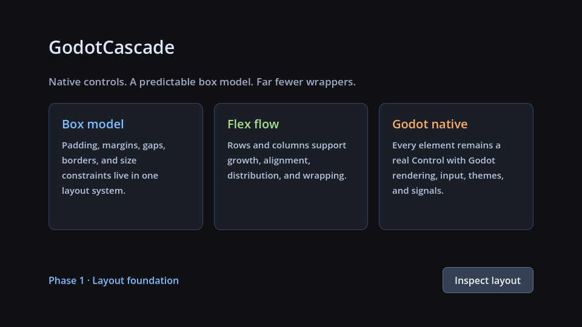

Current demo
Layout foundation
A feature-card layout exercising fractional grid tracks, gaps, stack overlays, absolute insets, flex flow, box styling, and the owned button component.
- Viewport
- 960 × 540
- Godot scene
examples/generated_showcase.tscn
HTML referenceOpen reference
GodotCascadeCaptured from the native Godot scene

Translation contract
Same intent, native target
The mapping is semantic rather than a promise of browser compatibility. Each supported declaration resolves into a typed CascadeStyle or layout value.
| HTML/CSS | GodotCascade source | Runtime |
|---|---|---|
<main> | <Page> | CascadeBox (column) |
display: grid | <Grid> | CascadeGrid track layout |
1fr 1fr 1fr | grid-template-columns | Fractional track resolution |
.cards > .card | .cards > .card | Direct-child selector matching |
@media (max-width: 700px) | @media (max-width: 700px) | Viewport-conditional recomputation |
7vh | 7vh | Viewport-aware length resolution |
position: absolute | <Stack> + right/top | Overlay inset placement |
visual media | <Image src="res://…"> | CascadeImage cover crop |
padding / gap | padding / column-gap | CascadeStyle + layout request |
card hover | .cards > .card:hover | Owned container hover adapter |
button click | on-pressed="_on_inspect_layout" | Event-to-method binding |
:hover / :active | :hover / :pressed | Native button state drawing |
HTML referenceexamples/showcase/layout_foundation/reference.html
<!doctype html>
<html lang="en">
<head>
<meta charset="utf-8">
<meta name="viewport" content="width=device-width, initial-scale=1">
<title>GodotCascade — Layout foundation HTML reference</title>
<style>
:root {
color-scheme: dark;
font-family: Inter, ui-sans-serif, system-ui, -apple-system, BlinkMacSystemFont, "Segoe UI", sans-serif;
background: #0e1014;
color: #dbe8ff;
}
* { box-sizing: border-box; }
html, body { margin: 0; min-height: 100%; }
body {
min-height: 540px;
background: #0e1014;
}
.page {
width: 100%;
min-height: 540px;
padding: 56px 80px;
display: flex;
flex-direction: column;
gap: 24px;
}
.hero {
position: relative;
height: 7vh;
}
h1 {
margin: 0;
color: #dbe8ff;
font-size: 30px;
font-weight: 500;
line-height: 1.2;
}
.layout-badge {
position: absolute;
right: 0;
top: 2px;
width: 112px;
height: 28px;
padding: 5px 8px;
color: #7dbfff;
font-size: 12px;
background: #17253a;
border: 1px solid #315a89;
border-radius: 6px;
}
.lede {
margin: -10px 0 0;
color: #9eacc7;
font-size: 17px;
line-height: 1.35;
}
.cards {
min-height: 230px;
display: grid;
flex: 1;
grid-template-columns: 1fr 1fr 1fr;
grid-template-rows: minmax(210px, 1fr);
column-gap: 18px;
}
.card {
min-height: 210px;
padding: 20px 22px;
display: flex;
flex-direction: column;
gap: 10px;
border: 1px solid #364561;
border-radius: 10px;
background: #1b1f27;
}
.card:hover { background: #242b37; }
.card h2 {
margin: 0;
font-size: 20px;
font-weight: 500;
}
.card p {
margin: 0;
flex: 1;
color: #b8c4db;
font-size: 15px;
line-height: 1.45;
}
.card-image {
position: relative;
width: 100%;
height: 56px;
flex: none;
overflow: hidden;
border: 1px solid #315a89;
border-radius: 6px;
background: linear-gradient(145deg, #193a64, #111827 65%);
}
.card-image::before {
content: "";
position: absolute;
right: 38px;
top: 8px;
width: 28px;
height: 28px;
border-radius: 50%;
background: #78c8ff;
box-shadow: 0 0 14px #4da3ff;
}
.card-image::after {
content: "";
position: absolute;
left: -10%;
right: -10%;
bottom: -28px;
height: 54px;
border-radius: 50%;
background: #1d5b5a;
}
.card:nth-child(1) h2 { color: #7dbfff; }
.card:nth-child(2) h2 { color: #a8e08c; }
.card:nth-child(3) h2 { color: #ffb064; }
.actions {
display: flex;
align-items: center;
gap: 12px;
}
.status {
flex: 1;
color: #7dbfff;
font-size: 16px;
}
button {
min-width: 150px;
min-height: 42px;
padding: 9px 14px;
border: 1px solid #667085;
border-radius: 7px;
background: #344054;
color: #f2f4f7;
font: inherit;
cursor: pointer;
}
button:hover { background: #475467; }
button:active { background: #1d2939; }
button:focus-visible { outline: 2px solid #84adff; outline-offset: -2px; }
@media (max-width: 700px) {
.page { padding: 24px; gap: 16px; }
.cards { grid-template-columns: 1fr; grid-template-rows: auto auto auto; row-gap: 12px; }
}
</style>
</head>
<body>
<main class="page">
<div class="hero">
<h1>GodotCascade</h1>
<span class="layout-badge">GRID + STACK</span>
</div>
<p class="lede">Native controls. A predictable box model. Far fewer wrappers.</p>
<section class="cards" aria-label="Features">
<article class="card">
<h2>Box model</h2>
<p>Padding, margins, gaps, borders, and size constraints live in one layout system.</p>
</article>
<article class="card">
<h2>Flex flow</h2>
<p>Rows and columns support growth, alignment, distribution, and wrapping.</p>
</article>
<article class="card">
<div class="card-image" role="img" aria-label="Stylized blue orbital landscape"></div>
<h2>Godot native</h2>
<p>Every element remains a real Control with Godot rendering, input, themes, and signals.</p>
</article>
</section>
<footer class="actions">
<span id="layout-status" class="status">Phase 1 · Layout foundation</span>
<button id="inspect-layout" type="button">Inspect layout</button>
</footer>
</main>
<script>
document.querySelector('#inspect-layout').addEventListener('click', () => {
document.querySelector('#layout-status').textContent = 'Layout inspection requested';
});
</script>
</body>
</html>
GodotCascade markupexamples/showcase/layout_foundation/interface.gxml
<!-- Executed by CascadeDocument's focused GXML/GCSS vertical slice. -->
<Page class="page">
<Stack class="hero">
<Label class="heading">GodotCascade</Label>
<Label class="layout-badge">GRID + STACK</Label>
</Stack>
<Label class="lede">Native controls. A predictable box model. Far fewer wrappers.</Label>
<Grid class="cards">
<Panel class="card box-model">
<Label class="card-title">Box model</Label>
<Label class="card-body">
Padding, margins, gaps, borders, and size constraints live in one layout system.
</Label>
</Panel>
<Panel class="card flex-flow">
<Label class="card-title">Flex flow</Label>
<Label class="card-body">
Rows and columns support growth, alignment, distribution, and wrapping.
</Label>
</Panel>
<Panel class="card godot-native">
<Image class="card-image" src="res://examples/showcase/assets/cascade-orbit.svg" accessible-label="Stylized blue orbital landscape" />
<Label class="card-title">Godot native</Label>
<Label class="card-body">
Every element remains a real Control with Godot rendering, input, themes, and signals.
</Label>
</Panel>
</Grid>
<Row class="actions">
<Label class="status" text="{ui.status}" />
<Button id="inspect" on-pressed="_on_inspect_layout">Inspect layout</Button>
</Row>
</Page>
GodotCascade stylesheetexamples/showcase/layout_foundation/styles.gcss
/* Executed by CascadeDocument's focused GXML/GCSS vertical slice. */
.page {
min-height: 540px;
padding: 56px 80px;
display: flex;
flex-direction: column;
gap: 24px;
background: #0e1014;
}
.heading {
color: #dbe8ff;
font-size: 30px;
}
.hero { height: 7vh; }
.layout-badge {
position: absolute;
right: 0px;
top: 2px;
width: 112px;
height: 28px;
padding: 5px 8px;
color: #7dbfff;
font-size: 12px;
background: #17253a;
border: 1px solid #315a89;
border-radius: 6px;
}
.lede {
color: #9eacc7;
font-size: 17px;
}
.cards {
min-height: 230px;
flex-grow: 1;
grid-template-columns: 1fr 1fr 1fr;
grid-template-rows: minmax(210px, 1fr);
column-gap: 18px;
}
.cards > .card {
min-height: 210px;
padding: 20px 22px;
display: flex;
flex-direction: column;
gap: 10px;
background: #1b1f27;
border: 1px solid #364561;
border-radius: 10px;
}
.cards > .card:hover { background: #242b37; }
.card-title { font-size: 20px; }
.card-body { color: #b8c4db; font-size: 15px; flex-grow: 1; }
.card-image {
width: 180px;
height: 56px;
object-fit: cover;
border: 1px solid #315a89;
border-radius: 6px;
}
.box-model .card-title { color: #7dbfff; }
.flex-flow .card-title { color: #a8e08c; }
.godot-native .card-title { color: #ffb064; }
.actions {
display: flex;
flex-direction: row;
align-items: center;
gap: 12px;
}
.status { color: #7dbfff; flex-grow: 1; }
#inspect {
min-width: 150px;
min-height: 42px;
padding: 9px 14px;
background: #344054;
color: #f2f4f7;
border: 1px solid #667085;
border-radius: 7px;
}
#inspect:hover { background: #475467; }
#inspect:pressed { background: #1d2939; }
#inspect:focused { border-color: #84adff; border-width: 2px; }
@media (max-width: 700px) {
.page { padding: 24px; gap: 16px; }
.cards {
grid-template-columns: 1fr;
grid-template-rows: auto auto auto;
row-gap: 12px;
}
}